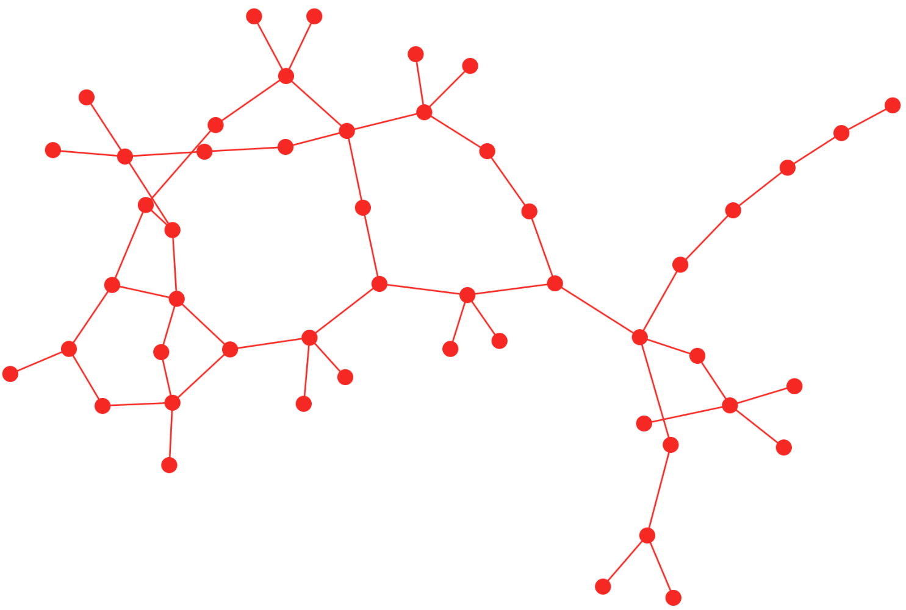
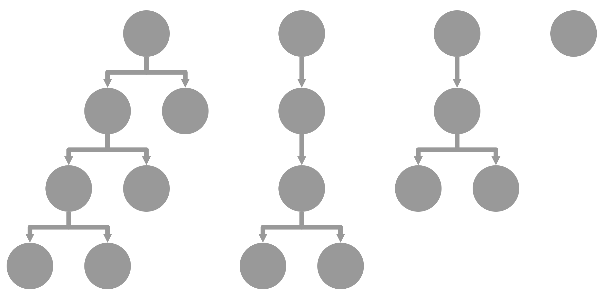
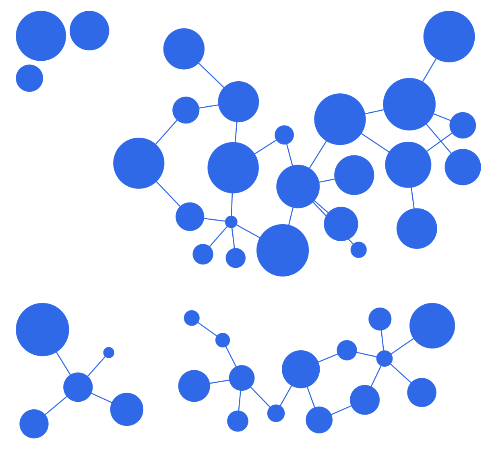
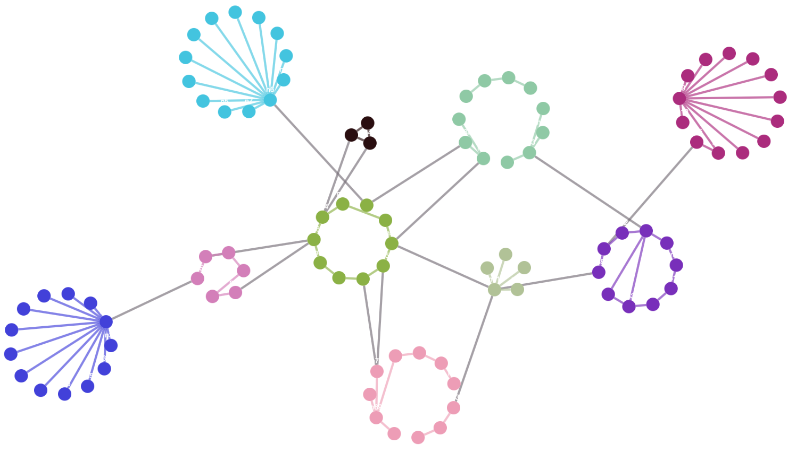
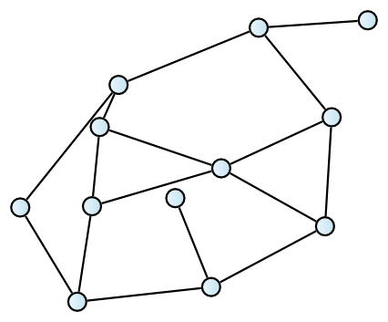
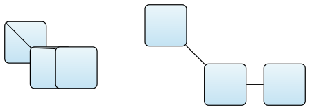
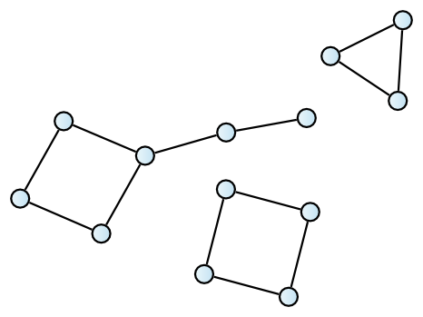

| Layout |
Uses |
Advantages |
Disadvantages |
| cola

|
When flexibility in node placement is needed. - When constraints need to be enforced. |
Features a powerful and flexible placement algorithm. Supports constraints and customization options. |
May be slower for large graphs. - May require fine-tuning to achieve desired results. |
| elk

|
Suitable for hierarchical graphs. When fine-grained control over node placement is required. |
Supports various advanced placement options. - Handles hierarchical graphs. - Provides good automatic node placement. |
May be slower for large graphs. - Configuration can be complex. |
| fcose

|
Ideal for complex graphs requiring aesthetically pleasing layouts. - Suitable for both hierarchical and non-hierarchical graphs. |
Produces aesthetically pleasing results with complex graphs. - Supports both hierarchical and non-hierarchical graphs. |
May be slower for large graphs. - May require fine-tuning to achieve desired results. |
| cise

|
Best suited for hierarchical graphs. - When compact and visually appealing layouts are desired. |
Specifically designed for hierarchical graphs. - Produces visually appealing and compact results for this type of graphs. |
May require fine-tuning to achieve desired results. - May not be suitable for non-hierarchical graphs. |
| Layout & Algorithm |
Description |
Advantages |
Disadvantages |
| Elk - Force

|
Force-based algorithm provided by the Eclipse Layout Kernel. Implements methods that follow physical analogies by simulating forces that move the nodes into a balanced distribution. Currently the original Eades model and the Fruchterman - Reingold model are supported. |
- Efficiently resolves node collisions. Allows precise control over applied forces. |
- May require additional configuration parameters for good results. |
| Elk - SPOrE Overlap Removal

|
A node overlap removal algorithm proposed by Nachmanson et al. in “Node overlap removal by growing a tree” |
- Reliable removal of node overlaps. Supports multiple overlap removal strategies. |
- May result in increased complexity and computation time for large graphs. |
| Elk - DisCo

|
Layouter for arranging unconnected subgraphs. The subgraphs themselves are, by default, not laid out. |
- Provides edge-crossing reduction mechanism to improve readability. Can enhance the overall graph structure. |
May require adjustments to achieve desired results. |